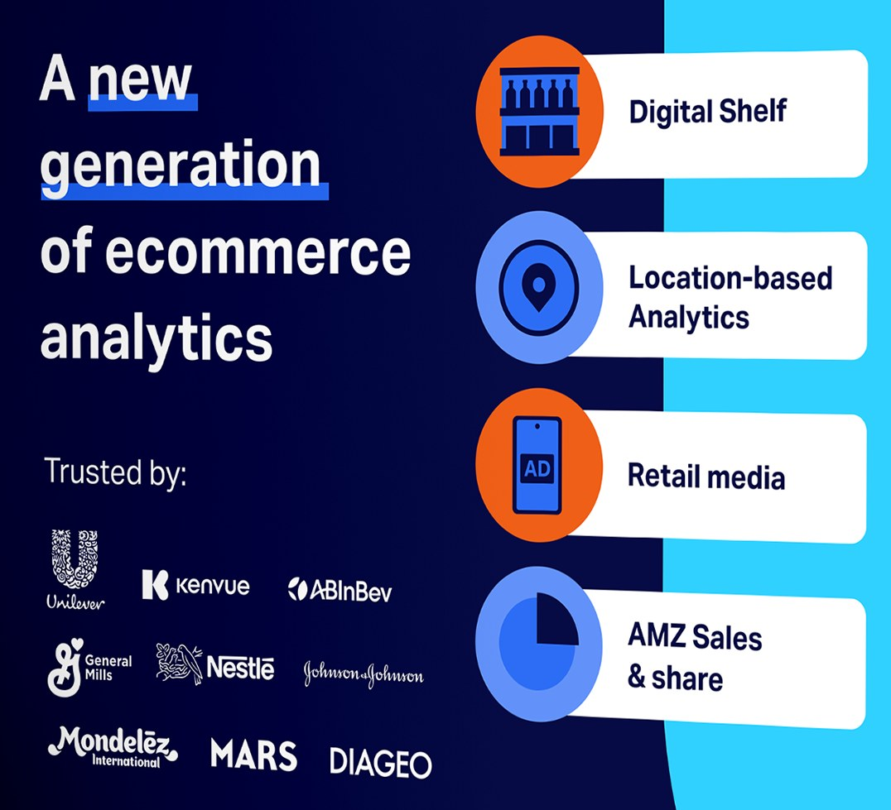

Print · Event design
NIQ for Digital Commerce: event booth
A bold, brand-aligned booth wrap and lectern that helped the London team stand out on a crowded event floor.
- Client
- NIQ for Digital Commerce
- Year
- 2025
- Role
- Designer
- Tools
- Adobe Illustrator

The brief
The NIQ for Digital Commerce team in London needed a booth for in-person events: something that would draw people in, show off the team's digital commerce expertise, and give them a professional but lively space to talk with visitors.
The project covered two pieces: a booth wrap for the main structure, and a lectern to anchor presentations and conversations.
Goals
- On brand: NIQ's colours, typography and key messages.
- Visual impact: striking and modern enough to stand out.
- Clarity: data points, services and messages that read at a glance.
- Easy to engage with: simple to navigate and interact with in person.
01
The booth wrap
Bold, but structured
A high-impact background with a clean layout reflects NIQ's data-driven approach. The headline, four service tiles with simple icons, and a “Trusted by” wall of well-known clients tell the story in seconds.
I used NIQ's signature colours boldly so they would still pop once printed, since print always looks duller than a screen. A QR code to the NIQ website and a contact email make the next step easy.

02
The lectern
Compact and eye-catching
A sleek, minimal design that complements the booth. The NIQ logo sits above the brand's signature “tapestry” of illustrated consumers.

Production
I worked with a London-based printer to produce the booth, preparing the four technical cut files in Adobe Illustrator, which were then assembled onto the frame.
Results
The booth drew strong foot traffic, with visitors stopping to talk to the team and ask about NIQ's digital commerce solutions. Attendees and NIQ colleagues praised the design as professional and visually compelling.